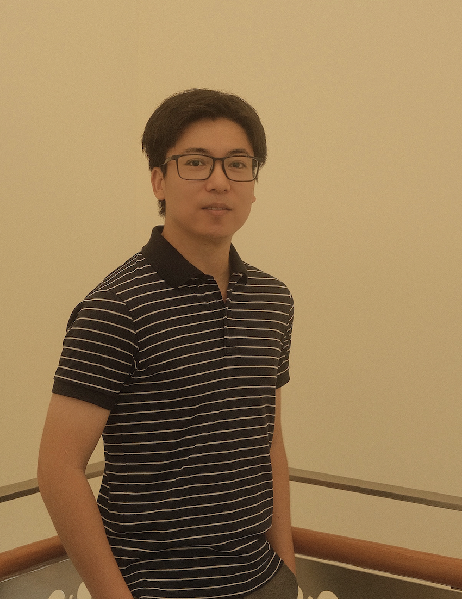

|  | Ph.D., MSc |
I received my Ph.D. from the School of Computer Science and Engineering (SCSE) at Nanyang Technological University, Singapore in 2023, supervised by Prof Guan Cuntai.
Before that, I received my MSc from the School of Electrical and Electronics Engineering (EEE) at Nanyang Technological University, Singapore in 2018, supervised by Prof Chen Tupei.
Previously, I earned my B.Eng degree from the School of Information Science and Technology at Donghua University, Shanghai, China in 2017.
My research interests include brain-computer interface, deep/machine learning, graph neural networks, affective computing, computational neuroscience, multimodal emotion recognition,
and their applications in neural signal decoding and mental disorder regulation.
|
EEG-Deformer: A Dense Convolutional Transformer for Brain-computer Interfaces
Yi Ding, Yong Li, Hao Sun, Rui Liu, Chengxuan Tong, Chenyu Liu, Xinliang Zhou, and Cuntai Guan
IEEE Journal of Biomedical and Health Informatics (J-BHI), 2024 [JCR Q1, IF=6.7][PDF][code]
REI-Net: A Reference Electrode Standardization Interpolation Technique based 3D CNN for Motor Imagery Classification
Meiyan Xu, Jie Jiao, Duo Chen, Yi Ding, et. al.
IEEE Journal of Biomedical and Health Informatics (J-BHI), 2024. [JCR Q1, IF=6.7]
Decoupled Doubly Contrastive Learning for Cross Domain Facial Action Unit Detection
Li, Y., Liu, M., Cui, Z., Ding, Y., Zong, Y., Zheng, W., Shan, S., Guan, C.
IEEE Transactions on Image Processing (TIP), 2024. (accepted) [JCR Q1, IF=10.8]
Beyond Overfitting: Doubly Adaptive Dropout for Generalizable AU Detection
Li, Y., Ren, Y., Niu, X., Wei, X., Ding, Y., Guan, C.
IEEE Transactions on Affective Computing (TAFFC), 2024. (accepted) [JCR Q1, IF=9.6]
Leveraging Temporal Dependency for Cross-subject-MI BCIs by Contrastive Learning and Self-attention
Hao Sun, Yi Ding, Jianzhu Bao, Chengxuan Tong, Jing Jin, Cuntai Guan
Neural Networks (NN), 2024. [JCR Q1, IF=7.8]
TASA: Temporal Attention with Spatial Autoencoder Network for Odor-induced Emotion Classification Using EEG
Chengxuan Tong, Yi Ding, Kevin Lim Jun Liang, Zhuo Zhang, Haihong Zhang, Cuntai Guan
IEEE Transactions on Neural Systems and Rehabilitation Engineering (TNSRE), 2024. [JCR Q1, IF=4.9]
MASA-TCN: Multi-anchor Space-aware Temporal Convolutional Neural Networks for Continuous and Discrete EEG Emotion Recognition
Yi Ding*, Su Zhang*, Chuangao Tang, Cuntai Guan
IEEE Journal of Biomedical and Health Informatics (J-BHI), 2024. [JCR Q1, IF=7.7] [PDF][code] *: equal contribution
Aggregating Intrinsic Information to Enhance BCI Performance through Federated Learning
Rui Liu, Yuanyuan Chen, Anran Li, Yi Ding , Han Yu, Cuntai Guan
Neural Networks(NN), 2024. [JCR Q1, IF=7.8][PDF]
LGGNet: Learning from Local-Global-Graph Representations for Brain-Computer Interface
Yi Ding, Neethu Robinson, Chengxuan Tong, Qiuhao Zeng, Cuntai Guan
IEEE Transactions on Neural Networks and Learning Systems (TNNLS), 2023. [JCR Q1, IF=10.4] [PDF][code]
TSception: Capturing Temporal Dynamics and Spatial Asymmetry from EEG for Emotion Recognition
Yi Ding, Neethu Robinson, Su Zhang, Qiuhao Zeng, Cuntai Guan
IEEE Transactions on Affective Computing (TAFFC), 2022. [JCR Q1, IF=11.2, Highly cited (WoS-2024-May)] [PDF][code]
GIGN: Learning Graph-in-graph Representations of EEG Signals for Continuous Emotion Recognition
Yi Ding, and Cuntai Guan
45rd Annual International Conference of the IEEE Engineering in Medicine & Biology Society (EMBC), 2023. [PDF] [code]
MTDN: Learning Multiple Temporal Dynamics Representation for Emotional Valence Classification with EEG
Chengxuan Tong, Yi Ding, Kevin Lim Jun Liang, and Cuntai Guan
45rd Annual International Conference of the IEEE Engineering in Medicine & Biology Society (EMBC), 2023. [PDF]
TESANet: Self-attention network for olfactory EEG classification
Chengxuan Tong, Yi Ding, Kevin Lim Jun Liang, Zhuo Zhang, Haihong Zhang, Cuntai Guan
International Joint Conference on Neural Networks (IJCNN) 2022.
Continuous Emotion Recognition Using Visual-Audio-Linguistic Information: A Technical Report for ABAW3
Su Zhang, Ruyi An, Yi Ding, Cuntai Guan
Proceedings of the IEEE/CVF Conference on Computer Vision and Pattern Recognition (CVPR) Workshops, 2022. [PDF][code]
Learning Generalized Representations of EEG between Multiple Cognitive Attention Tasks
Yi Ding*, Nigel Wei Jun Ang*, Aung Aung Phyo Wai, Cuntai Guan
43rd Annual International Conference of the IEEE Engineering in Medicine & Biology Society (EMBC), 2021. [PDF]*: equal contribution
Continuous Emotion Recognition With Audio-Visual Leader-Follower Attentive Fusion
Su Zhang*, Yi Ding*, Ziquan Wei*, Cuntai Guan
Proceedings of the IEEE/CVF International Conference on Computer Vision (ICCV) Workshops, 2021. [PDF][code] *: equal contribution
TSception:A Deep Learning Framework for Emotion Detection Using EEG
Yi Ding, Neethu Robinson, Qiuhao Zeng, Duo Chen, Aung Aung Phyo Wai, Tih-Shih Lee, Cuntai Guan
International Joint Conference on Neural Networks (IJCNN) 2020. [PDF][code]
Motor-Controlled Spindle (MCS) Detection for Primate in BCI System
Duo Chen, Rosa So, Yi Ding, Cuntai Guan
International IEEE/EMBS Conference on Neural Engineering (NER), 2019.
Intracortical Activity decoding of motor imagery based on Deep Convolutional Neural Network: a Pilot Study.
Duo Chen, Rosa So, Yi Ding, Cuntai Guan
GBCIC, 2019.